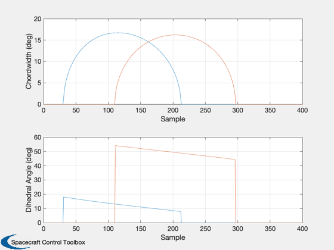

Test attitude determination using the batch methods
------------------------------------------------------------------------ See also ConjGrad, DiffCorr, Delay, Quant, RaDec2U, IsVersionAfter, UE, ADGen ------------------------------------------------------------------------
Contents
- Define global variables
- The orbital elements
- Physical spacecraft data
- Generate attitude data
- Just a change of variable for convenience
- Extract the data with chordwidths above a threshold
- This is the data used by the estimators
- Create the measurement vector.
- States to be solved for
- Nelder-Meade
- Conjugate Gradient
- Differential Corrector
%------------------------------------------------------------------------------- % Copyright (c) 1994-2001 Princeton Satellite Systems, Inc. % All rights reserved. %-------------------------------------------------------------------------------
Define global variables
%------------------------ global uss_ us1_ us2_ ue1_ ue2_ er1_ er2_ zs_ zh1_ zh2_ zd1_ zd2_; global Ws_ Wh1_ Wh2_ Wd1_ Wd2_ cant1 cant2; nsamples = 400; degToRad = pi/180; rPMToRPS = 2*pi/60; cant1 = 94*degToRad; cant2 = 86*degToRad; dihedral1 = 0*degToRad; dihedral2 = 45*degToRad; sigcw = 1; sigda = 1; sigss = 1; ssbias = 0.01; ssnoise = 0.0*degToRad; ssquant = 0.00000000001*degToRad; erbias = 0.0; cw1bias = 0.0; cw2bias = 0.0; da1bias = 0.0; da2bias = 0.0; cant1bias = 0.0; cant2bias = 0.0; c10 = cos(10*degToRad); s10 = sin(10*degToRad); sun = [c10;0;s10]; usun = [ c10*ones(1,nsamples);zeros(1,nsamples);s10*ones(1,nsamples)]; qtype = 'round'; onesigma = 0.0; spinrate = 10*rPMToRPS; quant = 1.e-12; delay = 0;
The orbital elements
%---------------------
el(1) = (42167 + 6800)/2;
el(2) = 7 * pi/180;
el(3) = 0;
el(4) = 0;
el(5) = 0.7;
ra = 1.5;
dec = -0.4;
uspin = RaDec2U(ra,dec);
Physical spacecraft data
%-------------------------
cantAngle = [cant1;cant2];
cantBias = [cant1bias;cant2bias];
dihedralBias = [dihedral1;dihedral2];
mA = linspace(pi/2,3*pi/2,nsamples);
Generate attitude data
%----------------------- [tLE,tTE,sa,unadir,eradius] = ADGen( el, usun, uspin, spinrate, mA, [delay;delay], ... [quant;quant], [qtype;qtype], [onesigma;onesigma], ... cantAngle, cantBias, dihedralBias, ssquant, ... 'round', ssnoise, ssbias, erbias );
Just a change of variable for convenience
%-------------------------------------------
tte1 = tTE(1,:);
tte2 = tTE(2,:);
tle1 = tLE(1,:);
tle2 = tLE(2,:);
Extract the data with chordwidths above a threshold
%---------------------------------------------------- chordwidth1 = spinrate*(tte1-tle1); chordwidth2 = spinrate*(tte2-tle2); % Short chords have lots of information but tend to be unreliable because the model % is inaccurate when chords are small %---------------------------------------------------------------------------------- kr = find(chordwidth1 > 6*degToRad | chordwidth2 > 6*degToRad);
This is the data used by the estimators
The first three are ephemeris data the next two are chordwidths, the following two are dihedral angles and the last is the sun angle
%------------------------------------------------------------------------------- us = usun(:,kr); ue = unadir(:,kr); er = eradius(kr); cw1 = chordwidth1(kr) + cw1bias; cw2 = chordwidth2(kr) + cw2bias; da1 = 0.5*spinrate*(tte1(kr)+tle1(kr))-dihedral1 + da1bias; da2 = 0.5*spinrate*(tte2(kr)+tle2(kr))-dihedral2 + da2bias; sb = sa(kr); % The state vector: % 1 2 3 4 5 6 % [ ra, dec, cwbias1, cwbias2, dabias1, dabias2, % 7 8 9 10 % cantbias1, cantbias2, sunbias, erbias] lkr = length(kr);
Create the measurement vector.
Must conform to definitions in hname and Hname
k1 = find(cw1 > 0);
k2 = find(cw2 > 0);
uss_ = us;
us1_ = us(:,k1);
us2_ = us(:,k2);
ue1_ = ue(:,k1);
ue2_ = ue(:,k2);
er1_ = er(k1);
er2_ = er(k2);
zs_ = sb';
zh1_ = cw1(k1)';
zh2_ = cw2(k2)';
zd1_ = da1(k1)';
zd2_ = da2(k2)';
Ws_ = ones(lkr,1) /sigss^2;
Wh1_ = ones(length(k1),1)/sigcw^2;
Wh2_ = ones(length(k2),1)/sigcw^2;
Wd1_ = ones(length(k1),1)/sigda^2;
Wd2_ = ones(length(k2),1)/sigda^2;
length([zs_;zh1_;zh2_;zd1_;zd2_]);
x0 = [1.6 -0.3 0.01 0 0 0 0 0 0 0]';
P = diag([100,100,1,1,1,1,1,1,1,1]);
S0 = inv(P);
%SO = zeros(10,10);
States to be solved for
%------------------------
kX = 1:2;
Nelder-Meade
disp('---------------------------------------------------------------------') disp('Nelder-Meade') disp('---------------------------------------------------------------------') % options(1) is nonzero, intermediate steps in the solution are displayed; % options(2) is the termination tolerance for x; the default is 1.e-4. % options(3) is the termination tolerance for F(x); the default is 1.e-4. % options(14) is the maximum number of steps; the default is 500. options = zeros(1,14); options([2 3 14]) = [1.e-4 1.e-4 500]; if( IsVersionAfter( 5.3 ) ) TolX = options(2); TolFun = options(3); MaxFunEvals = options(14); Options = optimset('TolX',TolX,'TolFun',TolFun,'MaxFunEvals',MaxFunEvals); x = fminsearch( 'CostNM',x0(kX), Options, kX,S0,x0,10); else x = fmins ( 'CostNM',x0(kX), options,[],kX,S0,x0,10); end x = rem(x,2*pi); uSpinNM = RaDec2U( x(1), x(2) );
--------------------------------------------------------------------- Nelder-Meade ---------------------------------------------------------------------
Conjugate Gradient
disp('---------------------------------------------------------------------') disp('Conjugate Gradient') disp('---------------------------------------------------------------------') x = ConjGrad( 'FX', 'CostF', S0, x0, kX, 0.00001, 1, 0 ); x = rem(x(:,end),2*pi); uSpinCG = RaDec2U( x(1,end), x(2,end) );
--------------------------------------------------------------------- Conjugate Gradient --------------------------------------------------------------------- Using conjugate gradients Initial cost 4.9760e+00 Cost and number of measurements used 6.3084e-01 863 Cost and number of measurements used 2.6663e-01 958 Cost and number of measurements used 2.1131e-01 971 Cost and number of measurements used 2.1082e-01 975 Cost and number of measurements used 2.1081e-01 975 Cost and number of measurements used 2.1081e-01 975
Differential Corrector
disp('---------------------------------------------------------------------') disp('Differential Corrector') disp('---------------------------------------------------------------------') [x,~,rsvd,cHWH,rank,P,wmr,sr,J,sig,nz] = DiffCorr( 'FX', S0, x0, kX, .001, 0 ); x = rem(x(:,end),2*pi); uSpinDC = RaDec2U( x(1,end), x(2,end) ); fprintf('\nSpin Vectors\n\n') fprintf('%24s %24s %24s\n\n','Nelder Meade','Conjugate Gradient',... 'Differential Corrector') ax = ['x' 'y' 'z']; for k = 1:3 fprintf('%s %24.8f %24.8f %24.8f\n\n',ax(k),uSpinNM(k),uSpinCG(k),uSpinDC(k)); end %--------------------------------------
---------------------------------------------------------------------
Differential Corrector
---------------------------------------------------------------------
Spin Vectors
Nelder Meade Conjugate Gradient Differential Corrector
x 0.06367329 0.06406641 0.06400678
y 0.91190515 0.91482650 0.91484554
z -0.40543151 -0.39873296 -0.39869884